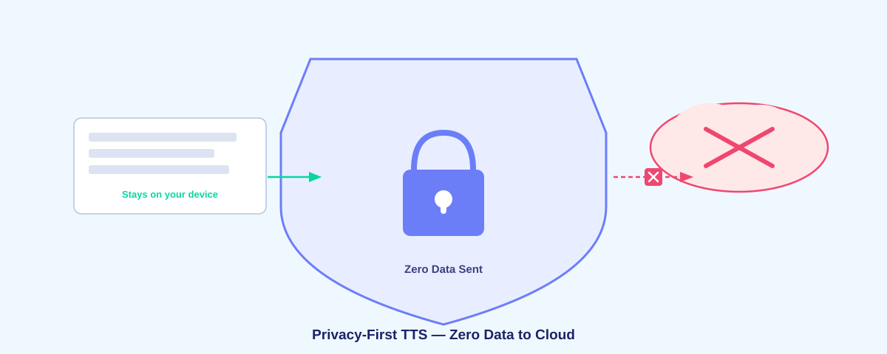

The Privacy-First TTS Browser Extension That Sends Zero Data to the Cloud

Most text-to-speech services send your reading activity to the cloud. They track what you read, when you read it, and sell insights to advertisers. Voice Reader is different: it's built on the principle that your data belongs to you and should never leave your device.
Why Privacy Matters in Text-to-Speech
When you use a cloud-based TTS service, every text passage you read gets transmitted to a server somewhere. That's a massive privacy problem. These companies can build detailed profiles of your interests, reading habits, and knowledge gaps. They can sell this data to third parties or use it for targeted advertising.
A truly free TTS extension avoids cloud processing entirely. Voice Reader runs all speech synthesis locally in your browser, so nothing about your reading ever leaves your device.
Zero Data Collection, Zero Cloud Uploads
Voice Reader operates on a simple principle: if data never leaves your computer, it can never be stolen, sold, or misused. Here's what we don't do:
- We don't send your text to cloud servers for processing
- We don't track which articles you read or when
- We don't store reading histories
- We don't collect analytics or usage data
- We don't require logins or accounts
- We don't share data with third parties
Every voice synthesis operation happens entirely within your browser. The neural language models run locally using WebAssembly. Your text never touches a network, period.
How Offline Neural TTS Works
Voice Reader uses Piper VITS and WebAssembly to power offline neural TTS. Instead of sending text to a distant server, the extension downloads lightweight neural language models once and runs them locally on your machine.
The first time you use Voice Reader, it caches the neural voice models in your browser. After that, no network calls are needed. Synthesis is instant, local, and completely private.
Compare to Speechify and Other Services
Popular TTS services like Speechify operate differently. They send your text to their servers, process it in the cloud, and stream the audio back to you. This enables:
- Complete tracking of your reading habits
- Profiling of your interests and knowledge
- Storage of your data for their business purposes
- Monthly subscription fees ($12-$20)
Voice Reader eliminates all of these privacy concerns. No subscription, no tracking, no data leaving your machine.
No Account, No Login, No Signup
Because Voice Reader works entirely offline and collects no data, there's no reason to create an account. Install the extension and it just works. You don't need to:
- Create a username or password
- Provide an email address
- Agree to complex privacy policies
- Link to a payment method
Privacy by design means zero friction. Install and use.
What About Browser Extensions and Permissions?
Voice Reader requests minimal permissions. The extension only needs to read the text on the current webpage—it doesn't access your browsing history, bookmarks, or any other sensitive browser data. Since all processing happens locally, the extension doesn't need to communicate with external servers.
Open Source Transparency
The best way to ensure privacy is transparency. Voice Reader is open source on GitHub, which means anyone can review the code and verify that no data collection happens. No hidden tracking, no surprise telemetry, no cloud calls buried in minified code.
If you care about privacy, you should always prefer tools where you can see how they work.
Works Offline, Works Everywhere
Because everything runs locally, Voice Reader works offline. No internet? No problem. Your neural voice models are cached locally, so text-to-speech works on flights, in tunnels, or anywhere without connectivity. Cloud-based services can't do this.
The Future of Privacy-First Software
Privacy should be the default, not an add-on. As devices become more powerful and AI models become smaller, there's no reason to rely on cloud services for basic features like text-to-speech. Voice Reader proves that you can build powerful, modern tools while respecting user privacy completely.
If you value your privacy and want to install Voice Reader directly from source, it takes less than a minute to get started.
Frequently Asked Questions
Is Voice Reader free forever?
Yes. The extension is free, open source, and will always be free. No ads, no premium tiers, no data selling.
What if I need cloud backup or sync?
Voice Reader doesn't need cloud backup because it doesn't store settings or history. The extension works with zero persistence, which is why privacy is guaranteed.
Will my internet provider see what I'm reading?
No. Once the neural voice models are cached locally, Voice Reader makes zero network requests. Your ISP won't see any TTS activity.
Can the extension see my passwords or sensitive data?
No. The extension only reads visible text on the webpage. It doesn't access passwords, form fields, or hidden data. And even the text you read stays entirely on your device.